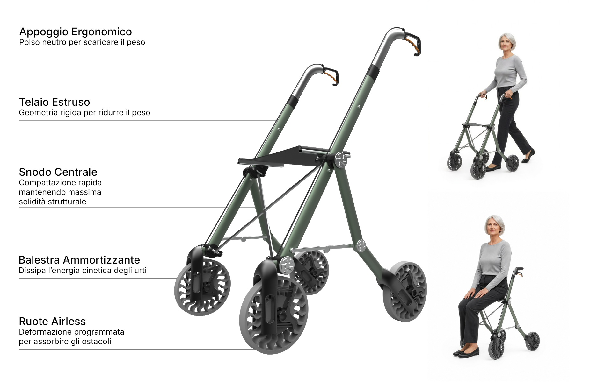
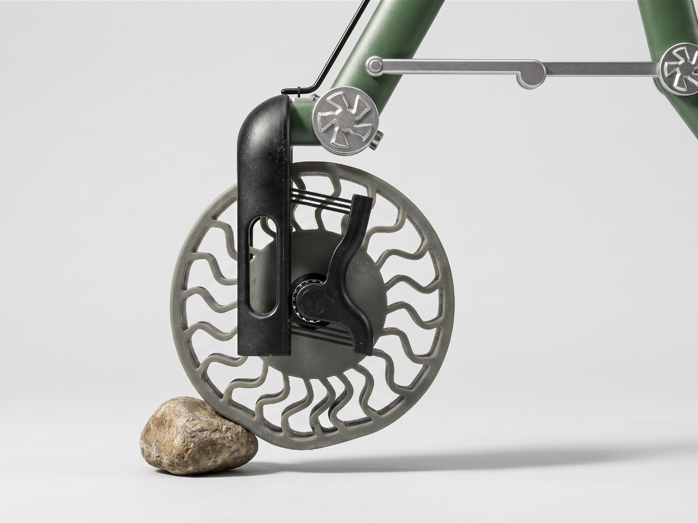
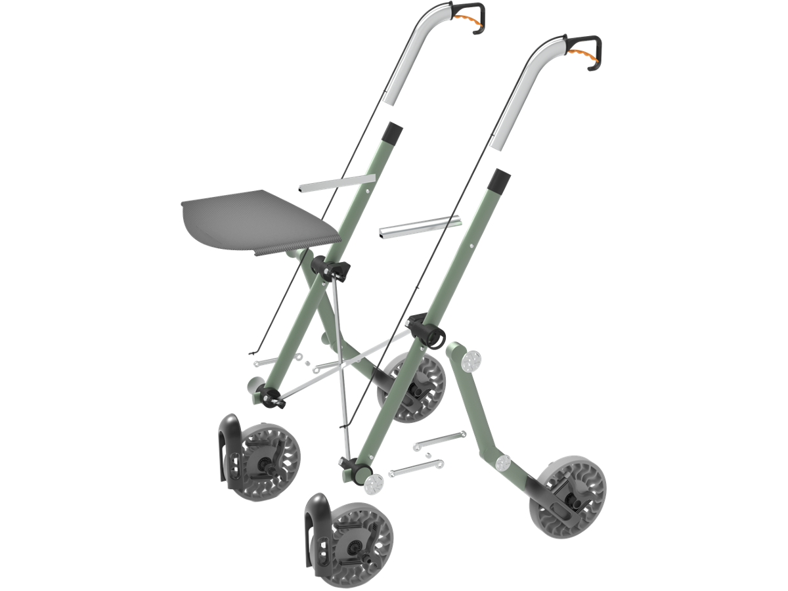
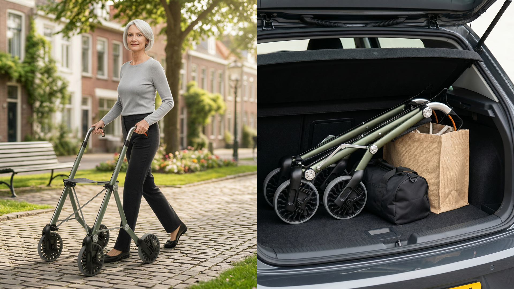

Glider
Progettato per utenti con osteoporosi o artrosi, Glider elimina le microvibrazioni del terreno. Unisce un'estetica ispirata al mondo outdoor a un'ingegneria meccanica avanzata, abbattendo lo stigma sociale del dispositivo medico.

- Tipo
- Progetto di corso
- Anno
- 2026
- Ruolo
- Design e prototipazione
- Strumenti
- Rhino, KeyShot, Stampa 3D
Il brief
Il progetto nasce dalla necessità di migliorare la mobilità outdoor per utenti fragili. Su percorsi irregolari, le continue microvibrazioni trasmesse agli arti superiori causano affaticamento e infiammazioni. La sfida era creare un sistema sospensivo integrato e un telaio ultraleggero, trasformando un ausilio medico tradizionale in un accessorio lifestyle dal design funzionale, rassicurante e privo dell'effetto "tubo ospedaliero".
Il processo
Lo sviluppo si è concentrato sull'ottimizzazione strutturale e meccanica. È stato progettato un telaio in alluminio estruso cavo, abbinato a un sistema a parallelogramma deformabile con sospensioni a balestra in fibra di vetro. Le ruote airless a deformazione programmata in TPE sono state modellate per assorbire gli impatti primari. Parallelamente, l'architettura ha seguito le regole del "Design for Disassembly", riducendo al minimo i componenti per facilitare la manutenzione, la compattazione tramite snodi anti-incastro e il riciclo a fine vita.



Il risultato
Glider offre un assetto di marcia adattivo che isola le vibrazioni e richiede zero manutenzione. Il meccanismo di chiusura a compasso garantisce la massima solidità da aperto e un ingombro minimo per il trasporto. La scelta della palette cromatica desaturata, ispirata all'attrezzatura da trekking, restituisce dignità e dinamismo all'utente, trasformando la percezione del rollator in una vera e propria attrezzatura sportiva.